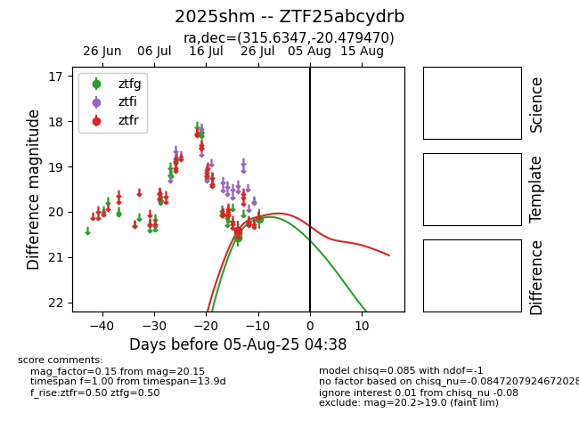

Target 2025shm at 2025-08-05 04:38, see:
FINK: fink-portal.org/2025shm
Lasair: lasair-ztf.lsst.ac.uk/objects/2025shm
ALeRCE: alerce.online/object/2025shm
TNS: wis-tns.org/object/2025shm
YSE: ziggy.ucolick.org/yse/transient_detail/2025shm
alt names
ZTF25abcydrb (ztf,fink)
2025shm (tns,yse)
coordinates:
equatorial (ra, dec) = (315.6347,-20.47947)
galactic (l, b) = (27.1225,-37.65288)
photometry
last ztfg=20.15, ztfr=20.42
3 ztfg, 1 ztfr detections
